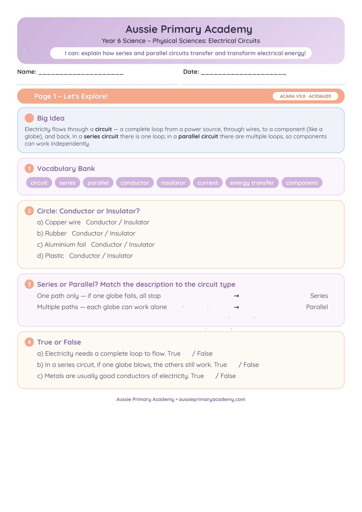

Year 6 · Science · Physical Sciences · Free Printable
Electrical Circuits Worksheet
Investigate how electricity flows in simple circuits and explore everyday electrical systems with this clear Year 6 Science worksheet.
Worksheet Preview

Preview of first page · Full worksheet inside the PDF
Quick Facts
- Primary learning: Science · Physical Sciences
- Year level: Year 6
- Focus: Simple circuits and everyday electrical systems
- Includes: Activities + answer support
- Format: Colour PDF · Printable A4
- Best for: Classroom, homework, tutoring, homeschool
About this worksheet
This Year 6 Science worksheet helps students understand how electricity flows in simple circuits. Students explore conductors, insulators and real-life electrical systems through clear, practical activities.
The worksheet is ready to print and use for whole-class lessons, small groups, homework or home learning.
Learning Intention
Students will investigate simple electrical circuits and explain how electricity is used in everyday systems.
Curriculum Alignment
Supports Year 6 Physical Sciences and Science Inquiry Skills in the Australian Curriculum V9.0.
Aussie Primary Academy is an independent publisher and is not endorsed by ACARA.
Skills Practised
- Identifying circuit components
- Understanding current flow
- Conductors and insulators
- Everyday electrical systems
- Scientific reasoning
Teacher / Parent Notes
Use as an introduction to circuits or as revision. Pair with simple hands-on circuit kits if available.
How to use this worksheet
- Whole class: Explicit teaching + independent practice
- Small groups: Discussion and circuit diagram activities
- Homework: Send home for revision
- Tutoring / Homeschool: Clear instructions make it easy to use independently
Differentiation
Support: Provide labelled circuit diagrams and sentence starters.
Core: Complete all activities independently.
Extend: Design and draw an original circuit for a real-world purpose and explain why it works.
Frequently Asked Questions
Does this worksheet need special equipment?
No. It can be completed with just the printable. Hands-on circuit kits are optional extras.
Is an answer key included?
Yes. Guidance and answer support are provided in the PDF.
Is it suitable for home learning?
Yes. Clear layout and instructions make it ideal for parents and tutors.